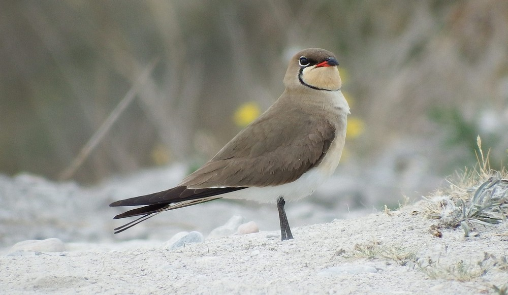

In flight, the Collared Pratincole's gait is somewhat similar to that of a tern, the association of its tail
deeply scalloped, its long pointed wings and short legs being an absolutely phenomenal
unique among shorebirds. However, the dimensions and coloring are different. The upper side of the plumage is
brown. The throat is cream, delimited by a fine black border which starts from the eye. The chest has a tint
redhead, the belly is white. The inner side of the wings bears a wide reddish-brown area bordered with black,
the rump is white, the tail black. The beak is short and black, with a red patch at the base.
Size: 25cm
Wingspan: 30 to 35 cm
Weight: 70 to 90 g
Order: Charadriiformes
Family: Glareolidae
Genus: Glareola
Species: pratincola
Like the tern, it has a harsh, scratchy call kik-kik or kikki kirrik.